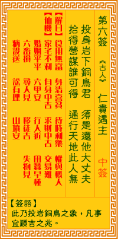

观音灵签第六签 【仁贵遇主】 |
 | |||
投身岩下饲於虎 须是还他大丈夫 舍己也应难再得 通行天下此人无 |
||||
| 【吉凶】 | 中平签 | 【宫位】 | 丑宫 | |
| 【签语】 | 此卦投岩铜鸟之象，凡事宜顺吉之兆。 | |||
| 【解曰】 | 食用无鱼 身清喜贫 待时利乐 权与概人 | |||
| 【仙机】 | 此签家宅不利，自身中吉，求财中吉，交易难，婚姻平平，六甲安，行人近，田蚕早种，六畜损，寻人见，移徙吉，失物见，疾病殁送，讼有理，山坟安。 | |||
| 【详解】 | 将自己丢在险峻的山崖下喂饲于老虎，仍然不会改变他大丈夫的情操;愿意这样舍身的人恐怕再也难以遇到，走遍天下也找不到第二个相同的人了吧。 为使非常，身清岂贫，待他时至，详与君知。此签岩下饲菟之象，凡事宜顺则吉。 于岩下饲于菟者。是凡事宜顺则吉之表征也。得本签之君。应知。为人宜守旧。不可轻举妄动者也。不可贪求非份之外之财。或舍近图远者。皆避免之。予以君知 者。使非常清身。岂贫待他时至祥。 此签有”见机行事”之意。意味当事人，智勇兼备。人有时会碰到他人故意刁难，甚至以强欺弱、仗势欺人，让事情更加棘手。在此情境之下，常因忍不下一口气 ，愤而误事。须知有勇无谋于事无补，与其冲动气愤、闹得两败俱伤，还不如保持冷静，用智慧与理智思考应对之道。故事中蔺相如之所以能完璧归赵，即是因为 拥有当机立断的机智，与直言不讳的勇气。凡事除了深思熟虑，也应兼具勇敢果断的胆识，适时言所当言、据理力争，无须畏惧强权，以免错失良机。 | |||
| 【典故】 | 唐朝李世民皇帝时的征东大将薛仁贵，神武英勇。初年不得志，三次投军不被重用，只任火头军（厨师），打仗有功劳也是由张土贵女婿何忠宪冒领。后李世民在梦中得见薛仁贵，及至世民被盖苏文追杀，仁贵及时出现救了世民（唐太宗）。后几经挫折，仁贵才见到太宗皇帝。《薛仁贵东征》故事 | |||